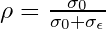
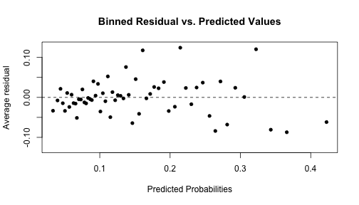
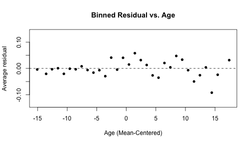

54 Econometrics, Mixed Effects, Frequentist
TOC
- Stuff
- Motivation for using a Random Effects model
- Model Choice
- Pooling
- Fixed Effects or Random Effects?
- Advantages of a mixed model (y ~ x + (x | g)) vs a linear model with an interaction (y ~ x * g)
- Assumptions
- Variable Assignment
- Fixed Effects
- Random Effects
- Specifications and Notation
- Strategy
- InterClass Coefficient (ICC)
- Diagnostics
- Examples
- Beyond Multiple Linear Regression
- Chapter 8 (Introduction to Multilevel Models)
- 2-Stage Model
- Multilevel Model
- Simple to Complex Model Building Workflow
- Unconditional Means (aka Random Intercepts)
- ICC
- Random Slopes and Intercepts Model (with 1 covariate)
- Pseudo-R2
- Random Slopes and Intercepts Model (with 2 covariates)
- Pseudo-R2
- Random Intercepts (with 2 covariates)
- AIC/BIC
- Random Slopes and Intercepts Model (with 3 covariates)
- LR-Test for comparing nested models
- Final Model
- Unconditional Means (aka Random Intercepts)
- Chapter 9 (2-Level Longitudinal Data)
- Chapter 8 (Introduction to Multilevel Models)
Stuff
Misc
- Random Effects model = Multi-level model with random intercepts = Hierarchical model
- Packages
- {lme4} - linear and generalized linear mixed-effects models; implemented using the ‘Eigen’ C++ library for numerical linear algebra and ‘RcppEigen’ “glue”.
- Using {lmerTest} will produce a summary of lme4 models with pvals for coefficients
- {plm} - linear models for panel data; including within/fixed effects, random effects, between, first-difference, nested random effects
- {glmmTMB} - for fitting generalized linear mixed models (GLMMs) and extensions
- Wide range of statistical distributions (Gaussian, Poisson, binomial, negative binomial, Beta …) and zero-inflation.
- Fixed and random effects models can be specified for the conditional and zero-inflated components of the model, as well as fixed effects for the dispersion parameter.
- {spaMM} - Inference based on models with or without spatially-correlated random effects, multivariate responses, or non-Gaussian random effects (e.g., Beta).
- {lme4} - linear and generalized linear mixed-effects models; implemented using the ‘Eigen’ C++ library for numerical linear algebra and ‘RcppEigen’ “glue”.
- Mixed Effects and repeated measures (aka longitudinal)
- Mixed Effects Models = Fixed Effects and Random Effects
- i.e. variation within the unit and between the units
- Harrell (article)
- Says that Mixed Models models can capture within-subject correlation of repeated measures over very short time intervals but not over extended time intervals where autocorrelation comes into play
- Example of a short interval is a series of tests on a subject over minutes when the subject does not fatigue
- Example of a long interval is a typical longitudinal clinical trial where patient responses are assessed weekly or monthly
- He recommends a Markov model for longitudinal RCT data (see bkmks)
- Says that Mixed Models models can capture within-subject correlation of repeated measures over very short time intervals but not over extended time intervals where autocorrelation comes into play
- Bartlett
- Mixed model repeated measures (MMRM) in Stata, SAS and R
- Tutorial; uses nlme::gls
- Mixed model repeated measures (MMRM) in Stata, SAS and R
- Mixed Effects Models = Fixed Effects and Random Effects
- {tidymodels} workflows (optional outputs: lmer, glmer, stan_glmer objects)
Motivation for using a Random Effects model
- You think the little subgroups are part of some bigger group with a common mean effect
- e.g. multiple observations of a single person, or multiple people in a school, or multiple schools in a district, or multiple varieties of a single kind of fruit, or multiple kinds of vegetable from the same harvest, or multiple harvests of the same kind of vegetable, etc.
- These subgroup means significantly deviate from the big group mean.
- These deviations follow a distribution, typically Gaussian.
- That’s where the “random” in random effects comes in: we’re assuming the deviations of subgroups from a parent follow the distribution of a random (Gaussian) variable
- The variation between subgroups is assumed to have a normal distribution with a 0 mean and constant variance (variance estimated by the model).
- GEEs are a semi-parametric option for panel data (See Regression, Other >> Generalized Estimating Equations (GEE))
- That’s where the “random” in random effects comes in: we’re assuming the deviations of subgroups from a parent follow the distribution of a random (Gaussian) variable
- You think the little subgroups are part of some bigger group with a common mean effect
Model Choice
Pooling Complete pooling - Each unit is assumed to have the same effect Example: County is the grouping variable and radon level is the outcome All counties are alike. i.e. all characteristics of counties that affect radon levels in houses have the statistically same effect across counties. Therefore, the variable has no information.
Run a single regression to estimate the average radon level in the whole state. `lm(radon_level ~ predictors)` Note that "county" is NOT a predictor in this model **No pooling** - All units are assumed to have _independent_ effects Example: County is the grouping variable (although not a predictor in this case) and radon level is the outcome All counties are _different_ from each other. i.e. there are no common characteristics of counties that affect radon levels in houses. Any characteristic a county has that affects radon levels is unique to that county. Run a regression for each county to estimate the average radon level for each county. `lm(radon_level ~ 0 + county + predictors` Using the "0 + " formula removes the common intercept which means each county will get it's own intercept- Partial pooling - Each unit is assumed to have a different effect, but the data for all of the observed units informs the estimates for each unit
Example: County is the grouping variable (random effect) and radon level is the outcome All counties are similar each other. i.e. all charcteristics of counties that affect radon levels in house have statistically varying effects sizes depending on the particular county
Run a multi-level regression to share information across counties. `lmer(radon_level ~ predictors + (1 + predictor | county))`This can be a nice compromise between estimating an effect by completely pooling all groups, which masks group-level variation, and estimating an effect for all groups completely separately, which could give poor estimates for low-sample groups.
If you have few data points in a group, the group’s effect estimate will be based partially on the more abundant data from other groups. (2 min video) Partial pooling is typically accomplished through hierarchical models. Hierarchical models directly model the population of units. From a population model perspective, no pooling corresponds to infinite population variance, whereas complete pooling corresponds to zero population variance.
- Partial pooling - Each unit is assumed to have a different effect, but the data for all of the observed units informs the estimates for each unit
Fixed Effects or Random Effects?
- If there’s likely correlation between unobserved group/cases variables (e.g. individual talent) and treatment variable (i.e. E(α|x) != 0) AND there’s substantial variance between group units, then FE is a better choice (see Econometrics, Fixed Effects >> Fixed Effects >> 1-way assumptions)
- If cases units change little, or not at all, across time, a fixed effects model may not work very well or even at all (SEs for a FE model will be large)
- The FE model is for analyzing within-units variance
- Do we wish to estimate the effects of variables whose values do not change across time, or do we merely wish to control for them?
- FE: these effects aren’t estimated but adjusted for by explicitly including a separate intercept term for each individual (αi) in the regression equation
- RE: estimates these effects (might be biased if RE assumptions violated)
- The RE model is for analyzing between-units variance
- The amount of within-unit variation relative to between-unit variation has important implications for these two approaches
- Article with simulated data showed that within variation around sd < 0.5 didn’t detect the effect of explanatory variable but ymmv (depends on # of units, observations per unit, N)
- Durbin–Wu–Hausman test ({plm::phtest})
- If H0 is not rejected, then both FE and RE are consistent but only RE is efficient. –> use RE but if you have a lot of data, then FE is also fine.
- If H0 is rejected, then only FE is consistent –> use FE
- ICC > 0.1 is generally accepted as the minimal threshold for justifying the use of Mixed Effects Model (See ICC section)
Advantages of a mixed model (y ~ x + (x | g)) vs a linear model with an interaction (y ~ x * g)
- From T.J. Mahr tweet
- Conceptual: Assumes participant means are drawn from the same latent population
- Computational: partial pooling / smoothing
- Both will have very similar parameter estimates when the data is balanced with few to no outliers
- linear least squares regression can overstate precision, producing t-statistics for each fixed effect that tend to be larger than they should be; the number of significant results in LLSR are then too great and not reflective of the true structure of the data
- Standard errors are underestimated in the interaction model though.
- Doesn’t account for dependence in the repeated measure for each subject
- For unbalanced data w/some group categories having few data points or with outliers, the mixed effects model regularizes/shrinks/smooths the estimates to the overall group (i.e. population) mean
- Example of model formula interpretation

Assumptions E(αi|xit) = 0: No time-constant unobserved heterogeneity i.e. no correlation between time-invariant valued, unobserved variables (aka random effect variable) and the explanatory variable of interest (e.g. treatment) time-invariant valued, unobserved variables: variables that are constant across time for each unit and explain variation between-units e.g. if random effect variable (aka clustering variable) is the individual, then the “time-invariant, unobserved” variable could be something latent like talent or something measureable like intelligence or socio-economic status. Whatever is likely to explain the variance between-units in relation to the response.
The effect that these variables have must also be time-invariant * e.g. the effect of gender on the outcome at time 1 is the same as the effect of gender at time 5 * If effects are time-varying, then an interaction of gender with time could be included It's not reasonable for this to be _exactly_ zero in order to use a mixed effected model, but for situations where there's high correlation, this model should be avoided * Example: violation  * Each group's x values get larger from left to right as each group's α (aka y-intercepts) for each unit get larger * i.e. multi-effects models fail in cases where there's very high correlation between group intercepts and x, together with large between-group variability compared to the within-group variability * \*\*FE model would be better in this case * Gelman has a [paper](file:///C:/Users/tbats/Documents/R/Documents/Regression/mixed%20effects/fitting-multilevel-models-when-predictors-group-effects-correlate-Bafumi-Gelman.pdf) that describes how a mixed effect model can be fit in this situation though E(ϵit|xit) = 0: No time-varying unobserved heterogeneity * i.e no endogeneity (no correlation between the residuals and explanatory variable of interest) * If violated, there needs to be explicit measurements of omitted time-invariant variables (see 1st assumption for definition) if they are thought to _interact_ with other variables in the model.Variable Assignment
- Questions (article has examples)
- Can the groups we see be considered the full population of possible groups we could see, or are they more like a random sample of a larger set of groups?
- Full Population: Fixed
- Random Sample: Random
- Do we want to estimate a coefficient for this grouping, or do we just want to account for the anticipated structure that the groups may impose on our observations?
- Y: Fixed
- N: Random
- Can the groups we see be considered the full population of possible groups we could see, or are they more like a random sample of a larger set of groups?
- Fixed Effects provide estimates of mean-differences or slopes.
- “Fixed” because they are effects that are constant for each subject/unit
- Level One: variables measured at the most frequently occurring observational unit
- i.e. vary for each repeated measure of a subject and vary between subjects
- In the dataset, these variables that (for the most part) have different values for each row
- Time-dependent if you have longitudinal data
- For a RE model, these are usually the adjustment variables
- e.g. conditioning on a confounder
- i.e. vary for each repeated measure of a subject and vary between subjects
- Level Two: variables measured at the observational unit level
- i.e. constant for each repeated measure of a subject but vary between each subject
- For a RE model, these are usually the treatment variables or variables of interest
- They should contain the information about the between-subject variation
- If a factor variable, it has levels which would not change in replications of the study
- Random Effects estimate of variation between and within subgroups
- Clustering variable
- Quantifies how much of the overall variation can be attributed to that particular variable.
- Example: the variation in beetle DAMAGE was attributable to the FARM at which the damage took place, so you’d cluster by FARM (
1|FARM)
- Example: the variation in beetle DAMAGE was attributable to the FARM at which the damage took place, so you’d cluster by FARM (
- If you want slopes to vary according to a variable, the variation of slopes between-units will be a random effect
- Usually a level 2 fixed effect variable
- If you want intercepts to vary according to a variable, the variation of intercepts between-units will be a random effect
- This will the unit/subject variable (e.g student id, store id) that has the repeated observations
- Typically categorical variables that we are not interested in measuring their effects on the outcome variable, but we do want to adjust for. This variation might capture effects of latent variables.
- This factor variable has levels which can be thought of as a sample from a larger population of factor levels (e.g. hockey players)
- Example: 2 hockey players both averaged around 20 minutes per game last year (fixed variable). Predictions of the amount of points scored by just accounting for this fixed variable would produce similar results. But using PLAYER as a random variable will capture the impact of persistent characteristics that might not be observable elsewhere in the explanatory data. PLAYER can be thought of as a proxy for “offensive talent” in a way.
- If the values of the variable were chosen at random, then you should cluster by that variable (i.e. choose as the random variable)
- Example: If you can rerun the study using different specific farms (i.e .different values of the FARM factor, see above) and still be able to draw the same conclusions, then FARM should be a random effect.
- However, if you had wanted to compare or control for these particular farms, then Farm would be “fixed.”
- Say that there is nothing about comparing these specific fields that is of interest to the researcher. Rather, the researcher wants to generalize the results of this experiment to all fields. Then, FIELD would be “random.”
- Example: If you can rerun the study using different specific farms (i.e .different values of the FARM factor, see above) and still be able to draw the same conclusions, then FARM should be a random effect.
- If the random effects are correlated with variables of interest (fixed effects), leaving them out could lead to biased fixed effects. Including them can help more reliably isolate the influence of the fixed effects of interest and more accurately model a clustered system.
- To see individual random effects:
lme4::ranef(lme_mod)orlme4::ranef(tidy_mod$fit)
- Questions (article has examples)
Specifications and Notation
- Varying intercept:
(1 | v1)aka random intercepts, where each level of the random variable (our random effect) had an adjustment to the overall intercept
Example: each DEPARTMENT (random variable) has a different starting (intercepts) SALARY (outcome variable) for their faculty members (observations), while the annual rate (slope) at which salaries increase is consistent across the university (i.e. effect is constant between-DEPARTMENTS)
.png)
.png)
where j[i] is the index for “department”
This strategy allows us to capture variation in the starting SALARY (intercepts) of our faculty
- Varying Slopes:
(0 + v2| v1)aka random slopes, which would allow the effect of the v2 to vary by v1
- i.e. v2 is a predictor whose effect varies according to the level of the grouping variable, v1.
i.e. a slope for each level of the random effects variable
Example: faculty SALARY (outcome) increase at different rates (slopes) depending on the DEPARTMENT (random variable).
.png)
.png)
where j[i] is the index for “department”
This strategy allows us to capture variation in the change (slopes) in SALARY
- Varying Slopes and Intercepts:
(1 + v2 | v1)or just(v2 | v1)(See examples)See above for descriptions of each
Example: each DEPARTMENT (random variable) has a different starting (intercepts) SALARY (outcome variable) for their faculty members (observations), while the annual rate (slope) at which salaries increase varies depending on DEPARTMENT
.png)
.png)
where j[i] is the index for “department”
See above for descriptions of each type of variation this strategy captures
- Nested effects
- e.g. studying test scores (outcome variable) within schools (random variable) that are within districts (random variable)
- notation:
(1 | v1 / v2)says intercepts varying among v1 and v2 within v1.- e.g. schools is v2 and districts is v1
- Varying intercept:
Strategy
- Misc
- begins with a saturated fixed effects model, determines variance components based on that, and then simplifies the fixed part of the model after fixing the random part.
- Overall:
- EDA
- Fit some simple, preliminary models, in part to establish a baseline for evaluating larger models.
- Then, build toward a final model for description and inference by attempting to add important covariates, centering certain variables, and checking model assumptions.
- Process
- EDA at each level (see EDA, Hierarchical)
- Examine models with no predictors to assess variability at each level
- Create Level One models: starting simple and adding terms as necessary (see Fixed Effects below)
- Create Level Two models: starting simple and adding terms as necessary (see Fixed Effects below)
- Beginning with the equation for the intercept term.
- Examine the random effects and variance components (see Random Effects below)
- Beginning with a full set of error terms and then removing covariance terms and variance terms where advisable
- e.g. when parameter estimates are failing to converge or producing impossible or unlikely values
- See Specifications and Notation for different RE modeling strategies.
- Beginning with a full set of error terms and then removing covariance terms and variance terms where advisable
- Misc
InterClass Coefficient (ICC): The proportion of variation that is between-cases
- where σ0 is the between-case variance and σε is the within-case variance.
- 1-ICC is the proportion of variation within cases
- Statistical power is a function of ICC (article)

- Both higher ICCs and cluster size variability lead to reduced power
- The dispersion parameter is a parameter used in the data simulation
- Guideline: ICC > 0.1 is generally accepted as the minimal threshold for justifying the use of Mixed Effects Model
library(sjPlot)
tab_model(lme_fit)- Might need {lmerTest} loaded to get coefficient pvals
- Also calculates two R2 values
- Marginal: proportion of variance explained , by the fixed effects only
- Conditional: proportion of variance explained by the fixed effects and random effects
- Diagnostics
- Misc
- {DHARMa} - Built for Mixed Effects Models for count distributions but also handles lm, glm (poisson) and MASS::glm.nb (neg.bin)
- Binned Residuals
- It is not useful to plot the raw residuals, so examine binned residual plots
- Misc
- {arm} will mask some {tidyverse} functions, so don’t load whole package
- Look for :
- Patterns
- Nonlinear trend may be indication that squared term or log transformation of predictor variable required
- If bins have average residuals with large magnitude
- Look at averages of other predictor variables across bins
- Interaction may be required if large magnitude residuals correspond to certain combinations of predictor variables
- Process
- Extract raw residuals
- Include
type.residuals = "response"in thebroom::augmentfunction to get the raw residuals
- Include
- Order observations either by the values of the predicted probabilities (or by numeric predictor variable)
- Use the ordered data to create g bins of approximately equal size.
- Default value: g = sqrt(n)
- Calculate average residual value in each bin
- Plot average residuals vs. average predicted probability (or average predictor value)
- Extract raw residuals
- Example: vs Predicted Values
- Misc
arm::binnedplot(x = risk_m_aug$.fitted, y = risk_m_aug$.resid,
xlab = "Predicted Probabilities",
main = "Binned Residual vs. Predicted Values",
col.int = FALSE)- Example: vs Predictor
arm::binnedplot(x = risk_m_aug$ageCent,
y = risk_m_aug$.resid,
col.int = FALSE,
xlab = "Age (Mean-Centered)",
main = "Binned Residual vs. Age")- Check that residuals have mean zero:
mean(resid(mod)) - Check that residuals for each level of categorical have mean zero
risk_m_aug %>%
group_by(currentSmoker) %>%
summarise(mean_resid = mean(.resid))Check for normality.# Normal Q-Q plot
qqnorm(resid(mod))
qqline(resid(mod))- Check normality per categorical variable level
- Example: 3 levels
## by level
par(mfrow=c(1,3))
qqnorm(resid(mod)[1:6])
qqline(resid(mod)[1:6])
qqnorm(resid(mod)[7:12])
qqline(resid(mod)[7:12])
qqnorm(resid(mod)[13:18])
qqline(resid(mod)[13:18])Data should be sorted by random variable level before modeling. Otherwise you could column bind the residuals to the original data. Then, group by random variable and make q-q plots for each group
Example: one-way random effects
re1 <- plm(happiness ~ age, data = df,
index = c("id", "wave"),
effect = "individual", model = "random")
summary(re1)
## Effects:
## var std.dev share
## idiosyncratic 0.03641 0.19081 0.096
## individual 0.34396 0.58648 0.904
## theta: 0.8394
## Coefficients:
## Estimate Std. Error z-value Pr(>|z|)
## (Intercept) 6.933947 1.534054 4.5200 6.183e-06 ***
## age -0.015621 0.031277 -0.4994 0.6175In Fixed effects, “id” is the cases variable and “wave” is the time variable, but I’m not sure if that’s how they’re referred to in a Mixed Effects model
- Maybe indexes are always required for panel data even if it isn’t a FE model
effect = "individual", model = "random"specifies the model as a mixed effects modelidiosyncratic is the time-variant variance (within-cases, ε) variance
individual is the time-constant (between-cases, α) variance
Example: random intercept-only model (aka unconditional means model) from https://www.alexcernat.com/etimating-multilevel-models-for-change-in-r/
library(lme4)
# unconditional means model (a.k.a. random effects model)
m0 <- lmer(data = usl, logincome ~ 1 + (1 | pidp))
# check results
summary(m0)
## Linear mixed model fit by REML ['lmerMod']
## Formula: logincome ~ 1 + (1 | pidp)
## Data: usl
##
## REML criterion at convergence: 101669.8
##
## Scaled residuals:
## Min 1Q Median 3Q Max
## -7.2616 -0.2546 0.0627 0.3681 5.8845
##
## Random effects:
## Groups Name Variance Std.Dev.
## pidp (Intercept) 0.5203 0.7213
## Residual 0.2655 0.5152
## Number of obs: 52512, groups: pidp, 8752
##
## Fixed effects:
## Estimate Std. Error t value
## (Intercept) 7.162798 0.008031 891.8uslis UK sociological survey datalogincomeis a logged income variablepidpis the person’s id
- Interpretation
- Fixed effects:
- (Intercept) = 7.162798, which is the grand mean
- says that over all the time points and individuals, the estimated average log income is 7.162798
- (Intercept) = 7.162798, which is the grand mean
- Random effects:
- everything that varies by “pidp”
- between-case (or person, group, cluster, etc.) variance: (Intercept) = 0.5203
- within-case (or person, group, cluster, etc.) variance: Residual = 0.2655
- Fixed effects:
- ICC
- 0.520/(0.520 + 0.265) = 0.662
- says about 66% of the variation in log income comes between people while the remaining (~ 34%) is within people.
Example:Random Intercept w/covariate- random effect: cases; fixed effect: time
- from https://www.alexcernat.com/etimating-multilevel-models-for-change-in-r/
library(lme4)
# unconditional change model (a.k.a. MLMC)
m1 <- lmer(data = usl, logincome ~ 1 + wave0 + (1 | pidp))
summary(m1)
## Linear mixed model fit by REML ['lmerMod']
## Formula: logincome ~ 1 + wave0 + (1 | pidp)
## Data: usl
##
## REML criterion at convergence: 100654.8
##
## Scaled residuals:
## Min 1Q Median 3Q Max
## -7.1469 -0.2463 0.0556 0.3602 5.7533
##
## Random effects:
## Groups Name Variance Std.Dev.
## pidp (Intercept) 0.5213 0.7220
## Residual 0.2593 0.5092
## Number of obs: 52512, groups: pidp, 8752
##
## Fixed effects:
## Estimate Std. Error t value
## (Intercept) 7.057963 0.008665 814.51
## wave0 0.041934 0.001301 32.23
##
## Correlation of Fixed Effects:
## (Intr)
## wave0 -0.375uslis UK sociological survey datalogincomeis a logged income variablepidpis the person’s idwave0is the time variable that’s indexed at 0
- Interpretation
- Fixed effects:
- (Intercept) = 7.057; the expected log income at the beginning of the study (wave 0).
- wave0 = 0.0419
- the average rate of change with the passing of a wave.
- I don’t think this is a percentage. It’s the same as a standard OLS regression interpretation.
- So after each wave, individual log income is expected to slowly increase by 0.041 on average.
- the average rate of change with the passing of a wave.
- Random effects:
- everything that varies by “pidp”
- between-case (or person, group, cluster, etc.) variance in log income: (Intercept) = 0.5213
- within-case (or person, group, cluster, etc.) variance in log income: Residual = 0.2593
- So this stuff is still very similar numbers as the random intercept-only model
- Fixed effects:
usl$pred_m1 <- predict(m1)
usl %>%
filter(pidp %in% 1:5) %>% # select just five individuals
ggplot(aes(wave, pred_m1, color = pidp)) +
geom_point(aes(wave, logincome)) + # points for observed log income
geom_smooth(method = lm, se = FALSE) + # linear line showing wave0 slope
theme_bw() +
labs(x = "Wave", y = "Logincome") +
theme(legend.position = "none")
- wave was indexed to 0 for the model but now wave starts at 1. He might’ve reverted wave to have a starting value of 1 for graphing purposes
- Lines show the small, positive, fixed effect slope for
wave0 - parallel lines means we assume the change in log income over time is the same for all the individuals
- i.e. we assume there is no between-case variation in the rate of change.
- Example: Random (Varying) Slopes and Intercepts
- random effect: outcome (i.e. intercept) by cases, time effect by cases; fixed effect: time from https://www.alexcernat.com/etimating-multilevel-models-for-change-in-r/
library(lme4)
# unconditional change model (a.k.a. MLMC) with re for change
m2 <- lmer(data = usl, logincome ~ 1 + wave0 + (1 + wave0 | pidp))
summary(m2)
## Linear mixed model fit by REML ['lmerMod']
## Formula: logincome ~ 1 + wave0 + (1 + wave0 | pidp)
## Data: usl
##
## REML criterion at convergence: 98116.1
##
## Scaled residuals:
## Min 1Q Median 3Q Max
## -7.8825 -0.2306 0.0464 0.3206 5.8611
##
## Random effects:
## Groups Name Variance Std.Dev. Corr
## pidp (Intercept) 0.69590 0.8342
## wave0 0.01394 0.1181 -0.51
## Residual 0.21052 0.4588
## Number of obs: 52512, groups: pidp, 8752
##
## Fixed effects:
## Estimate Std. Error t value
## (Intercept) 7.057963 0.009598 735.39
## wave0 0.041934 0.001723 24.34
##
## Correlation of Fixed Effects:
## (Intr)
## wave0 -0.558uslis UK sociological survey datalogincomeis a logged income variablepidpis the person’s idwave0is the time variable that’s indexed at 0(1 + wave0 | pidp)- says let both the intercept (“1”) and wave0 vary by pidp
- which means that average log income varies by person and the rate of change (slope) in log income over time (wave0 fixed effect) varies by person.
- says let both the intercept (“1”) and wave0 vary by pidp
- Interpretation
- Fixed effects:
- (Intercept) =7.057963; the expected log income at the beginning of the study (wave 0).
- wave0 = 0.0419
- the average rate of change with the passing of a wave.
- I don’t think this is a percentage. It’s the same as a standard OLS regression interpretation.
- So after each wave, individual log income is expected to slowly increase by 0.041 on average.
- the average rate of change with the passing of a wave.
- Random effects:
- everything that varies by “pidp”
- between-case (or person, group, cluster, etc.) variance of log income:
- (Intercept) = 0.69590
- how much average log income varies by person at the start of the study (wave = 0)
- within-case (or person, group, cluster, etc.) variance of log income:
- Residual = 0.21052
- how much each person’s log income varies in relation to her average log income
- between-case variance in the rates of change of log income over time
- wave0 = 0.01394
- i.e. how much the fixed effect, wave0, slope varies by person
- Fixed effects:
usl$pred_m2 <- predict(m2)
usl %>%
filter(pidp %in% 1:5) %>% # select just two individuals
ggplot(aes(wave, pred_m2, color = pidp)) +
geom_point(aes(wave, logincome)) + # points for observed logincome
geom_smooth(method = lm, se = FALSE) + # linear line based on prediction
theme_bw() + # nice theme
labs(x = "Wave", y = "Logincome") + # nice labels
theme(legend.position = "none")
Different slopes for each person
Example: Varying Slopes and Intercepts
m_slope <- lmer(pp60 ~ position + toi + (1 + age | player),
data = df)We use this model if we wanted to incorporate an age variable into our model and we wanted the influence of that variable to vary by player, it would be incorporated like so, before the | player:
Example (ggeffects error bar plot)
- Description:
- outcome: Distance; fixed effect: Season; random_effect: Athlete

- outcome: Distance; fixed effect: Season; random_effect: Athlete
- Description:
library(ggeffects)
library(ggplot2)
# create plot dataframe
# Has 95% CIs for fixed effects and lists random effects
plot_data <- ggpredict(fit, terms = c("Season"))
#create plot
plot_data %>%
#reorder factor levels for plotting
mutate(x = ordered(x, levels = c("Preseason", "Inseason", "Postseason"))) %>%
#use plot function with ggpredict objects
plot() +
#add ggplot2 as needed
theme_blank() + ylim(c(3000,7000)) + ggtitle("Session Distance by Season Phase")- Example: tidymodels
lmer_spec <-
linear_reg() %>%
set_engine("lmer")
tidy_mod <-
lmer_spec %>%
fit(pp60 ~ position + toi + (1 | player),
data = df)
tidy_mod
## parsnip model object
##
## Linear mixed model fit by REML ['lmerMod']
## Formula: pp60 ~ position + toi + (1 | player)
## Data: data
## REML criterion at convergence: 115.8825
## Random effects:
## Groups Name Std.Dev.
## player (Intercept) 0.6423
## Residual 0.3452
## Number of obs: 80, groups: player, 20
## Fixed Effects:
## (Intercept) positionF toi
## -0.16546 1.48931 0.06254Beyond Multiple Linear Regression (link) Chapter 8 (Introduction to Multilevel Models)
- Variable types
- Level One: variables measured at the most frequently occurring observational unit
- i.e. variables that (for the most part) have different values for each row
- i.e. vary for each repeated measure of a subject and vary between subjects
- Level Two: variables measured on larger observational units
- i.e. constant for each repeated measure of a subject but vary between each subject
- Level One: variables measured at the most frequently occurring observational unit
- Example Description
- “na” (outcome) - negative affect (i.e. performance anxiety)
- “LargeEns” - binary
- LargeEns = 1 means the performance type is a Large Ensemble
- LargeEns = 0 means the performance type is either a solo or small ensemble
- “Orch” - binary
- Orch = 1 means the instrument is Orchestral
- Orch = 0 means the instrument is either a Keyboard or it’s Vocal
- 2-Stage Model
- The 2-stage model shows a clearer depiction of how a multi-level model is fit in principle
- 2-stage model uses Ordinary Least Squares to fit a system of regression equations in stages
- The multi-level model fits a composite of that system of equations using Maximum Likelihood Estimation
- Process
- Level 1 models are fitted for each subject/unit
- Using the estimated level 1 intercepts and slopes as outcome variables, Level 2 intercept and slope models respectively are fit
- The errors from the Level 2 models are the random effects
- Issues
- Weights every subject the same regardless of the number of repeated observations
- Responds to missing individual slopes (i.e. subjects never exposed to treatment) by simply dropping those subjects
- Does not share strength effectively across subjects
- Specification
- Level 1
.png)
- bi is the fixed effect for subject/unit i and observation j (i.e. each subject has repeated observations)
- Level 2
.png)
- ui and vi are the random effects for subject/unit i
- ai is the true (i.e. not estimated since no hat) mean of performance anxiety (outcome) when subject plays solos or small ensembles (LargeEns = 0)
- bi is the true mean difference in performance anxiety (outcome) for subjecti between large ensembles and other performance types (LargeEns contrast)
- Level 1
- The 2-stage model shows a clearer depiction of how a multi-level model is fit in principle
- Multi-Level
- Process
- Level 1 and Level 2 equations have been combined through substitution then reduced into a composite model
- Parameters estimated through Maximum Likelihood Estimation
- Misc
- Error Distribution
- Correlation between parameters is accounted for using a multivariate normal distribution estimated through a variance-covariance matrix of the error terms (aka random effects) of each Level (see link for details)
- Adding Level 1 variables to a model formula should change within-person variability (^σ2 and ^σ)
- Even without adding a Level 1 variable, small changes could occur due to numerical estimation procedures used in likelihood-based parameter estimates
- Optimization methods
- Usually very little difference between ML and REML parameter estimates
- Restricted Maximum Likelihood (REML) is preferable when the number of parameters is large or the primary interest is obtaining estimates of model parameters, either fixed effects or variance components associated with random effects
- Maximum Likelihood (MLE) should be used if nested fixed effects models are being compared using a likelihood ratio test, although REML is fine for nested models of random effects that have the same fixed effects.
- P-Values
- Can’t be calculated because the exact distribution of the test statistics under the null hypothesis (no fixed effect) is unknown, primarily because the exact degrees of freedom is not known
- Rule of Thumb: t-values (ratios of parameter estimates to estimated standard errors) with absolute value above 2 indicate significant evidence that a particular model parameter is different than 0
- Packages that do report p-values of fixed effects typically using conservative assumptions, large-sample results, or approximate degrees of freedom for a t-distribution
- Using {lmerTest} will produce a summary of {lme4} with pvals for coefficients
- Parametric Bootstrap can be used to approximate the distribution of the likelihood test statistic and produce more accurate p-values by simulating data under the null hypothesis
- Model Comparison
- Pseudo-R2
- see below in Simple to Complex Model Building Workflow >>
- Random Slopes and Intercepts Model (with 1 covariate)
- Random Slopes and Intercepts Model (with 2 covariates)
- see below in Simple to Complex Model Building Workflow >>
- AIC, BIC
- See Simple to Complex Model Building Workflow >> Random Intercepts (with 2 covariates)
- Likelihood Ratio Test (LR-Test)
- See Simple to Complex Model Building Workflow >> Random Slopes and Intercepts Model (with 3 covariates)
- Pseudo-R2
- Error Distribution
- Specification (composite model of level 1 and level 2 equations)
.png)
- Random Slopes and Intercepts Model (with 2 covariates) (see Model Hierarchy section)
- Fixed Effects: α0, α1, β0 and β1
- “ui + vi*LargeEnsij + εij” is the interesting part.
- This part has all the error terms and any variables in the Level 2 equations
- The first part is a typical regression with interaction terms.
- Interpretation (
- see 2-stage model for definitions for ai and bi
Keyboardists and Vocalists (Orchi = 0) ai = α0 + ui
bi \= β0 \+ viOrchestral Instrumentalists (Orchi = 1) ai = (α0 + α1) + ui
bi \= (β0 \+ β1) + vi
- Mean performance anxiety (outcome)
- Keyboardists or vocalists (orch = 0) playing solos or small ensembles (large = 0): α0
- Keyboardists or vocalists (orch = 0) playing large ensembles (large = 1): α0 + β0
- Orchestral instrumentalists (orch = 1) playing solos or small ensembles (large = 0): α0 + α1α0 + α1
- Orchestral instrumentalists (orch = 1) playing large ensembles (large = 1): α0 + α1 + β0 + β1
- see 2-stage model for definitions for ai and bi
- Model Summary (using
lmer4::lmer())
- Process
Linear mixed model fit by REML ['lmerMod']
A) Formula: na ~ orch + large + orch:large + (large | id)
Data: music
B) REML criterion at convergence: 2987
B2) AIC BIC logLik deviance df.resid
3007 3041 -1496 2991 489
Random effects:
Groups Name Variance Std.Dev. Corr
C) id (Intercept) 5.655 2.378
D) large 0.452 0.672 -0.63
E) Residual 21.807 4.670
F) Number of obs: 497, groups: id, 37
Fixed effects:
Estimate Std. Error t value
G) (Intercept) 15.930 0.641 24.83
H) orch 1.693 0.945 1.79
I) large -0.911 0.845 -1.08
J) orch:large -1.424 1.099 -1.30- Definitions
- A: How our multilevel model is written in R, based on the composite model formulation.
- B: Measures of model performance. Since this model was fit using REML, this line only contains the REML criterion.
- B2: If the model is fit with ML instead of REML, the measures of performance will contain AIC, BIC, deviance, and the log-likelihood.
- C: Estimated variance components (^σ2u and ^σu) associated with the intercept equation in Level Two. (between-unit variability)
- D: Estimated variance components (^σ2v and ^σv) associated with the large ensemble (large = 1) effect equation in Level Two. (also between-unit variability but just for the slope)
- Also, in the “Corr” column, the estimated correlation (^ρuv) between the two Level Two error terms.
- E: Estimated variance components (^σ2 and ^σ) associated with the Level One equation. (within-unit variability)
- F: Total number of performances where data was collected (Level One observations = 497) and total number of subjects (Level Two observations = 37).
- G: Estimated fixed effect (^α0) for the intercept term, along with its standard error and t-value (which is the ratio of the estimated coefficient to its standard error).
- H: Estimated fixed effect (^α1) for the orchestral instrument (orch = 1) effect, along with its standard error and t-value.
- I: Estimated fixed effect (^β0) for the large ensemble (large = 1) effect, along with its standard error and t-value.
- J: Estimated fixed effect (^β1) for the interaction between orchestral instruments (orch = 1) and large ensembles (large = 1), along with its standard error and t-value.
- Interpretations
- Fixed effects:
- ^α0 = 15.9 — The estimated mean performance anxiety (outcome) for solos and small ensembles (large = 0) for keyboard players and vocalists (orch = 0) is 15.9.
- ^α1 = 1.7 — Orchestral instrumentalists (orch = 1) have an estimated mean performance anxiety (outcome) for solos and small ensembles (large = 0) which is 1.7 points higher than keyboard players and vocalists (orch = 0).
- ^β0 = −0.9 — Keyboard players and vocalists (orch = 0) have an estimated mean decrease in performance anxiety (outcome) of 0.9 points when playing in large ensembles (large = 1) instead of solos or small ensembles (large = 0).
- ^β1 = −1.4 — Orchestral instrumentalists (orch = 1) have an estimated mean decrease in performance anxiety (outcome) of 2.3 points when playing in large ensembles (large = 1) instead of solos or small ensembles (large = 0), 1.4 points greater than the mean decrease among keyboard players and vocalists (orch = 0).
- He’s calculating simple slope/marginal effect (see Regression, Interactions) and choosing to use that as the interpretation for the interaction term
- From ch 1 (link): “we interpret the coefficient for the interaction term by comparing slopes under fast and non-fast conditions; this produces a much more understandable interpretation for a reader than attempting to interpret the -0.011 (interaction coef) directly”
- fast and non-fast are levels of a main effect and a term in the interaction.
- From ch 1 (link): “we interpret the coefficient for the interaction term by comparing slopes under fast and non-fast conditions; this produces a much more understandable interpretation for a reader than attempting to interpret the -0.011 (interaction coef) directly”
- Calculation: The interaction is the difference in slopes for one interaction variable (e.g. large) at different values of the other interaction variable (e.g. orch)
- Regression eq (ignoring the random effects part):
- ^Yi = 15.93 + 1.693orchi - 0.911large − 1.424orchi × largei
- Examining the “large” slope so only dealing with terms that contain “large”
- large = 1 is reference category in the interaction that the coefficient is associated with so it remains constant
- When orch = 0 and large = 1, the slope for large is -0.911 = ^β0
- - 0.911large − 1.424orchi × largei = -0.911*1 - 1.424*0*1 = -0.911 = ^β0
- When orch = 1 and large = 1, the slope for large is -2.335 (uses this one for his interpretation)
- - 0.911large − 1.424orchi × largei = -0.911*1 - 1.424*1*1 = -0.911 - 1.424 = -2.335 (i.e. “decrease… of 2.3 points”)
- The difference in these slopes is the interaction coefficient: -2.335 - (-0.911) = -1.424
- Regression eq (ignoring the random effects part):
- He’s calculating simple slope/marginal effect (see Regression, Interactions) and choosing to use that as the interpretation for the interaction term
- Variance components
- ^σu = 2.4 — The estimated standard deviation of performance anxiety (outcome) for solos and small ensembles (large = 0) is 2.4 points, after controlling for instrument (orch) played.
- ^σv = 0.7 — The estimated standard deviation of differences in performance anxiety (outcome) between large ensembles (large = 1) and other performance types (large = 0) is 0.7 points, after controlling for instrument (orch) played.
- ^ρuv = −0.64 — The estimated correlation between performance anxiety scores (outcome) for solos and small ensembles (large = 0) and increases in performance anxiety (outcome) for large ensembles (large = 1) is -0.64, after controlling for instrument (orch) played.
- Those subjects with higher performance anxiety scores for solos and small ensembles tend to have greater decreases in performance anxiety for large ensemble performances.
- ^σ = 4.7 — The estimated standard deviation in residuals for the individual regression models is 4.7 points.
- Fixed effects:
- Simple to Complex Model Building Workflow (using {lme4})
- Workflow should include:
- fixed effects that allow one to address primary research questions
- fixed effects that control for important covariates at all levels
- investigation of potential interactions
- variables that are centered where interpretations can be enhanced
- important variance components
- removal of unnecessary terms
- a final model that tells a “persuasive story parsimoniously”
- Model Comparison (also see multi-level >> misc >> p-values & model comparison)
- LR-Test for nested models
- AIC, BIC for unnested models
- Consider models that involve removing terms that have t-stats < |2|
- Models
- Unconditional Means (aka Random Intercepts)
- Random Slopes and Intercepts Model (with 1 covariate)
- Random Slopes and Intercepts Model (with 2 covariates)
- Random Intercepts (with 2 covariates)
- Random Slopes and Intercepts Model (with 3 covariates)
- Final Model
- Unconditional Means (aka Random Intercepts)
- Specification
- Level 1
.png)
- ai is the true mean response of all observations for subjecti.
- Level 2
.1.png)
- each subject’s intercept is assumed to be a random value from a normal distribution centered at α0 with variance σ2u.
- Composite
.png)
- Level 1
- Model
- Specification
- Workflow should include:
#Model A (Unconditional means model)
model.a <- lmer(na ~ 1 + (1 | id), REML = T, data = music)
## Groups Name Variance Std.Dev.
## id (Intercept) 4.95 2.22
## Residual 22.46 4.74
## Number of Level Two groups = 37
## Estimate Std. Error t value
## (Intercept) 16.24 0.4279 37.94- Interpretation
- ^α0 = 16.2 — the estimated mean performance anxiety score across all performances and all subjects.
- ^σ2 = 22.5 — the estimated variance in within-person deviations.
- ^σ2u = 5.0 (rounded from 4.95) — the estimated variance in between-person deviations.
- ICC
.png)
- 18.2% of the total variability in performance anxiety scores are attributable to differences among subjects.
- *For plain random intercepts models only*, you can also say this same number says that the average correlation for any pair of responses from the same individual is a moderately low .182.
- As ρ approaches 0: responses from an individual are essentially independent and accounting for the multilevel structure of the data becomes less crucial. However,
- As ρ approaches 1: repeated observations from the same individual essentially provide no additional information and accounting for the multilevel structure becomes very important.
- Effective Sample Size: the number of independent pieces of information we have for modeling
- With ρ near 0: ESS approaches the total number of observations.
- With ρ near 1: ESS approaches the number of subjects in the study.
- 18.2% of the total variability in performance anxiety scores are attributable to differences among subjects.
- Random Slopes and Intercepts Model (with 1 covariate)
- 1 - Level 1
- Specification
- Level 1
.png)
- Level 2
.png)
- Composite
.png)
- Level 1
- Model
model.b <- lmer(na ~ large + (large | id), data = music)
## Groups Name Variance Std.Dev. Corr
## id (Intercept) 6.333 2.517
## large 0.743 0.862 -0.76
## Residual 21.771 4.666
## Number of Level Two groups = 37
## Estimate Std. Error t value
## (Intercept) 16.730 0.4908 34.09
## large -1.676 0.5425 -3.09“large” is the binary level 1 covariate, “LargeEns”
Interpretation
- ^α0 = 16.7 — the mean performance anxiety level (outcome) before solos and small ensemble performances (LargeEns = 0).
- ^β0 = −1.7 — the mean decrease in performance anxiety (outcome) before large ensemble performances (LargeEns = 1).
- Subjects had a performance anxiety level of 16.7 before solos and small ensembles, and their anxiety levels were 1.7 points lower, on average, before large ensembles, producing an average performance anxiety level before large ensembles of 15.0
- Statistically significant since |t-value| > 2
- ^σ2 = 21.8 — the variance in within-person deviations.
- ^σ2u = 6.3 — the variance in between-person deviations in performance anxiety scores (outcome) before solos and small ensembles (LargeEns = 0).
- ^σ2v = 0.7 — the variance in between-person deviations in increases (or decreases) (slope) in performance anxiety scores (outcome) before large ensembles (LargeEns = 1).
- ^ρuv = −0.76 (Corr column)
- Slopes and intercepts are negatively correlated
- A strong negative relationship between a subject’s performance anxiety (outcome) before solos and small ensembles (LargeEns = 0) (Intercept) and their (typical) decrease in performance anxiety (Slope) before large ensembles (LargeEns = 1) .
Pseudo-R2 (Not always a reliable performance measure)
.png)
- Where Model A: Unconditional Means; Model B: Random intercepts and slopes
- fyi
- percent decrease = (original_value - new_value) / orginal_value
- pseudo-R2 uses this one
- if negative, it’s a percent increase.
- percent increase = (new_value - original_value) / original_value
- if negative, it’s a percent decrease.
- percent decrease = (original_value - new_value) / orginal_value
- Positive value means Model B is an improvement over Model A
- Means the variance in Model B’s error terms is smaller than Model A’s, and therefore better fits the data. (I think)
- The estimated within-person variance ^σ2 decreased by 3.1% (from 22.5 to 21.8) from the unconditional means model
- Implies that only 3.1% of within-person variability in performance anxiety scores can be explained by performance type
- Values of ^σ2u and ^σ2v from Model B cannot be compared to between-person variability from Model A using pseudo-R2, since the inclusion of performance type has changed the interpretation of these values
- Issues
- “Because of the complexity of estimating fixed effects and variance components at various levels of a multilevel model, it is not unusual to encounter situations in which covariates in a Level Two equation for the intercept (for example) remain constant (while other aspects of the model change), yet the associated pseudo R-squared values differ or are negative.” (?)
Random Slopes and Intercepts Model (with 2 covariates)
1 - Level 1; 1 - Level 2
Specification, Model, Interpretation (see Multi-level section above)
- Says the “LargeEns” effect (slope) varies across subjects/units
Pseudo-R2
.png)
Model B is Random Slopes and Intercepts Model (with 1 covariate)
Model C is Random Slopes and Intercepts Model (with 2 covariates)
The addition of Level 2 variable, “Orch”, in Model C:
- (Top) Decreased the between-person variability in mean (intercept) performance anxiety (outcome) before solos and small ensembles (LargeEns = 0) by 10.6%
- (Bottom) Decreased the between-person variability in the effect (slope) of large ensembles (LargeEns = 1) on performance anxiety (outcome) by 39.2%
Random Intercepts (with 2 covariates)
- 1 - Level 1; 1 - Level 2
- Instead of assuming that the large ensemble (LargeEns) effects, after accounting for instrument played (Orch), vary by individual, we are assuming that large ensemble effect is fixed across subjects.
- Specification
- Level 1
- Level 2
.png)
.png)
- Only difference is the random effect/error term, vi , isn’t specified
- Composite
- Not given, but probably very similar to the previous model just without vi
- Level 1
- Model
model.c2 <- lmer(na ~ orch + large + orch:large + (1|id), data = music)
## Groups Name Variance Std.Dev.
## id (Intercept) 5.13 2.27
## Residual 21.88 4.68
## Number of Level Two groups = 37
## Estimate Std. Error t value
## (Intercept) 15.9026 0.6187 25.703
## orch 1.7100 0.9131 1.873
## large -0.8918 0.8415 -1.060
## orch:large -1.4650 1.0880 -1.347- Interpretation
- Same as previous model except there’s no between-units variation estimate for the slope (see previous model and Multi-level model section above)
- Estimates are similar to the previous model’s. Largest difference seems to be the between-unit variation for the Intercept (5.65 vs 5.13)
- Comparison
df AIC
model.c 8 3003
model.c2 6 2999
df BIC
model.c 8 3037
model.c2 6 3025Model C is the previous model and Model C2 is this model
Both criterion pick this model to predict best
The more complex model (e.g. varying intercepts and varying slopes) doesn’t always perform best
Random Slopes and Intercepts Model (with 3 covariates)
- 1 - Level 1; 2 - Level 2
- “MPQnem” has been centered (mean = 31.63)
- Otherwise some interpretations would involve MPQnem = 0 when the minimum score is 11 which would make the interpretation nonsensical
- Specification
- Level 1
- Level 2
.png)
- Composite
.png)
- Level 1
- Model
model.d <- lmer(na ~ orch + mpqnem + large +
orch:large + mpqnem:large +
(large | id),
data = music)
## Groups Name Variance Std.Dev. Corr
## id (Intercept) 3.286 1.813
## large 0.557 0.746 -0.38
## Residual 21.811 4.670
## Number of Level Two groups = 37
## Estimate Std. Error t value
## (Intercept) 16.25679 0.54756 29.6893
## orch 1.00069 0.81713 1.2246
## cmpqnem 0.14823 0.03808 3.8925
## large -1.23484 0.84320 -1.4645
## orch:large -0.94927 1.10620 -0.8581
## cmpqnem:large -0.03018 0.05246 -0.5753- Interpretation
- Compared to Random Slopes and Intercepts Model (with 2 covariates):
- Directions of the effects of instrument (Orch) and performance type (large) are consistent
- Effect sizes and levels of significance are reduced because of the relative importance of the negative emotionality (mpqnem) term
- α0 = 16.26 — The estimated mean performance anxiety (outcome) for solos and small ensembles (large = 0) is 16.26 for keyboard players and vocalists (orch=0) with an average level of negative emotionality at baseline (mpqnem = 31.63)
- ^α1 = 1.00 — Orchestral instrument (orch = 1) players have an estimated mean anxiety (outcome) level before solos and small ensembles (large = 0) which is 1.00 point higher than keyboardists and vocalists (orch = 0), controlling for the effects of baseline negative emotionality.
- ^α2 = 0.15 — A one point increase in baseline negative emotionality (mpqnem = 0) is associated with an estimated 0.15 mean increase in anxiety (outcome) levels before solos and small ensembles (large = 0), after controlling for instrument (orch).
- ^β0 = −1.23 — Keyboard players and vocalists (orch = 0) with an average level of baseline negative emotionality levels (mpqnem = 31.63) have an estimated mean decrease in anxiety level (outcome) of 1.23 points before large ensemble performances (large = 1) compared to other performance types (large = 0).
- See multi-level >> interpretation for explainer on the interaction slope interpretations
- ^β1 = −0.95 — After accounting for baseline negative emotionality (mpqnem = 0), orchestral instrument players (orch = 1) have an estimated mean anxiety level (outcome) before solos and small ensembles (large = 0) which is 1.00 point higher than keyboardists and vocalists (orch = 0), while the mean anxiety (outcome) of orchestral players (orch = 1) is only .05 points higher before large ensembles (large = 1) (a difference of .95 points).
- See multi-level >> interpretation for explainer on the interaction slope interpretations
- ^β2 = −0.03 — After accounting for instrument, a one-point increase in baseline negative emotionality is associated with an estimated 0.15 mean increase in anxiety levels before solos and small ensembles, but only an estimated 0.12 increase before large ensembles (a difference of .03 points).
- Compared to Random Slopes and Intercepts Model (with 2 covariates):
- LR-Test for comparing nested models
drop_in_dev <- anova(model.d, model.c, test = "Chisq")
npar AIC BIC logLik dev Chisq Df pval
model.c 8 3007 3041 -1496 2991 NA NA NA
model.d 10 2996 3039 -1488 2976 14.73 2 0.0006319MLE must be used instead of REML to estimate the parameters of each model
“model.d” is the current and more complex model, Random Slopes and Intercepts Model (with 3 covariates)
“model.c” is the less complex model, Random Slopes and Intercepts Model (with 2 covariates)
Process
- The likelihood is larger (and the log-likelihood is less negative) under the larger model (Model D);
- Chisq = 14.734 = -2 * (-1488 - (-1496))
- Using dof = 2, signifying the number of additional terms in Model D, we obtain a p-value of .0006.
A p-value < 0.05 indicates the difference in log-likelihoods is significantly different from 0, and therefore the more complex model, model.d, fits the data better.
Note: dropping the “cmpqnem:large” term which has a t-stat < |2| (-0.5753) produces a better model than model.d according the LR-test
Final Model
- Description
- One of other valid final models
- performance type categorical is no longer collapsed into the binary “large” ensemble/not large and is has now been collapsed into the binary, solo, not solo
- audience categorical has been transformed to dummies: students, juried, public with “Instructor” as the reference category.
- Varying/random slopes for previous, students, juried, public, and solo
- “mpqnem” is in the “solo” level 2 equation, so the combined model has an interaction between the two in the fixed effects.
- Specification
- Level 1
.1.png)
- Level 2
.png)
- Variance-Covariance matrix
.png)
- 6 variance terms and 15 correlation terms at Level Two, along with 1 variance term at Level One.
- The number of correlation terms is equal to the number of unique pairs among Level Two random effects
- Variance-Covariance matrix
- Level 1
- Model
- Description
# Model F (One - of many - reasonable final models)
model.f <- lmer(na ~ previous + students + juried +
public + solo + mpqpem + mpqab + orch + mpqnem +
mpqnem:solo + (previous + students + juried +
public + solo | id), REML = T, data = music)
## Groups Name Variance Std.Dev. Corr
## id (Intercept) 14.4802 3.805
## previous 0.0707 0.266 -0.65
## students 8.2151 2.866 -0.63 0.00
## juried 18.3177 4.280 -0.64 -0.12
## public 12.8094 3.579 -0.83 0.33
## solo 0.7665 0.876 -0.67 0.47
## Residual 15.2844 3.910
##
## 0.84
## 0.66 0.58
## 0.49 0.21 0.90
##
## Number of Level Two groups = 37
## Estimate Std. Error t value
## (Intercept) 8.36883 1.91369 4.3731
## previous -0.14303 0.06247 -2.2895
## students 3.61115 0.76796 4.7022
## juried 4.07332 1.03130 3.9497
## public 3.06453 0.89274 3.4327
## solo 0.51647 1.39635 0.3699
## mpqpem -0.08312 0.02408 -3.4524
## mpqab 0.20377 0.04740 4.2986
## orch 1.53138 0.58384 2.6230
## mpqnem 0.11465 0.03591 3.1930
## solo:mpqnem 0.08296 0.04158 1.9951- Interpretation
- In general
- performance anxiety (outcome) is higher when a musician is performing in front of students, a jury, or the general public rather than their instructor
- “students”, “juried”, and “public” are indicator variables created from the audience categorical variable (so that “Instructor” is the reference level in this model)
- performance anxiety (outcome) is lower for each additional diary the musician previously filled out
- “previous” is the number of previous diary entries filled out by that individual
- musicians with lower levels of positive emotionality (“mpqpem”) and higher levels of absorption (“mpqab”) tend to experience greater performance anxiety (outcome)
- Those who play orchestral instruments experience (orch = 1) more performance anxiety than those who play keyboards or sing (orch = 0)
- performance anxiety (outcome) is higher when a musician is performing in front of students, a jury, or the general public rather than their instructor
- Key terms
- ^α4 = 0.11 (mpqnem, fixed) — A one-point increase in baseline level of negative emotionality (mpqnem) is associated with an estimated 0.11 mean increase in performance anxiety (outcome) for musicians performing in an ensemble group (solo=0), after controlling for previous diary entries (previous), audience (dummy vars), positive emotionality (mpqpem), absorption (mpqab), and instrument (orch).
- ^ζ1 = 0.08 (solo:mpqnem, fixed) — When musicians play solos (solo = 1), a one-point increase in baseline level of negative emotionality (mpqnem) is associated with an estimated 0.19 mean increase in performance anxiety (outcome), 0.08 points (73%) higher than musicians playing in ensemble groups (solo = 0), controlling for the effects of previous diary entries (previous), audience (dummy vars), positive emotionality (mpqpem), absorption (mpqab), and instrument (orch).
- See multi-level >> interpretation for explainer on the interaction slope interpretations
- Addressing the researchers’ primary hypothesis:
- After controlling for all these factors, we have significant evidence that musicians with higher levels of negative emotionality (mpqpem) experience higher levels of performance anxiety (outcome), and that this association is even more pronounced (interaction) when musicians are performing solos (solo = 1) rather than as part of an ensemble group (solo = 0).
- In general
Chapter 9 (2-Level Longitudinal Data)
- Research Questions
- Which factors most influence a school’s performance in Minnesota Comprehensive Assessment (MCA) testing?
- How do the average math MCA-II scores for 6th graders enrolled in charter schools differ from scores for students who attend non-charter public schools? Do these differences persist after accounting for differences in student populations?
- Are there differences in yearly improvement between charter and non-charter public schools?
- data answers
- Within school—changes over time
- Between schools—effects of school-specific covariates (charter or non-charter, urban or rural, percent free and reduced lunch, percent special education, and percent non-white) on 2008 math scores and rate of change between 2008 and 2010.
- Misc
- Missing data is a common phenomenon in longitudinal studies